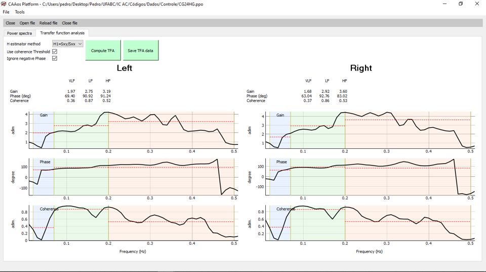
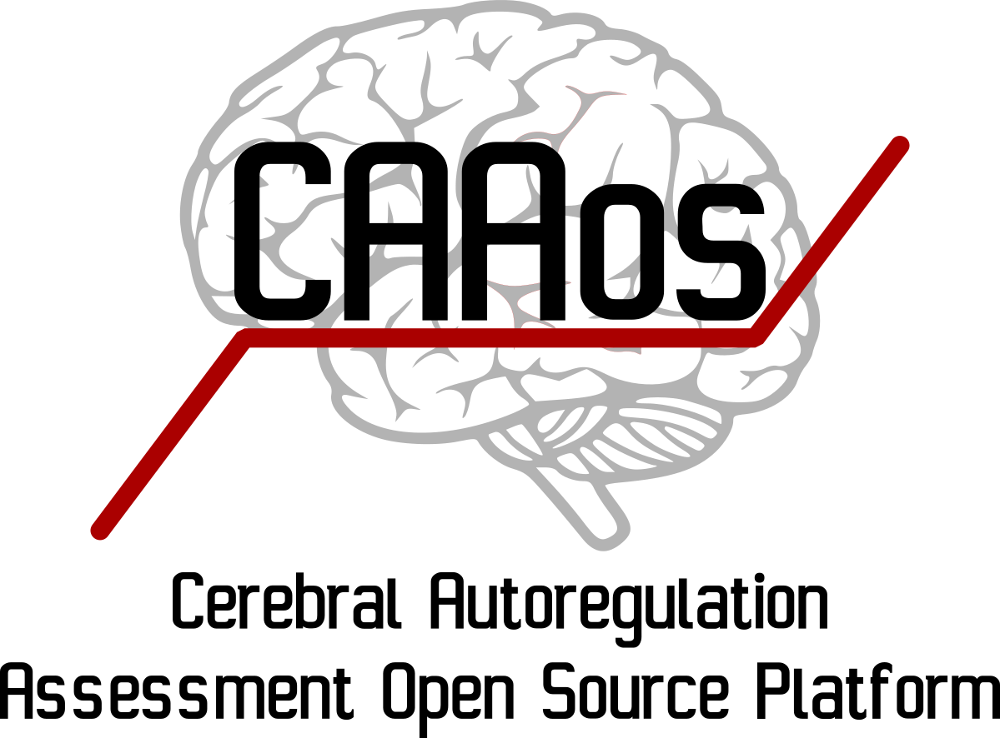
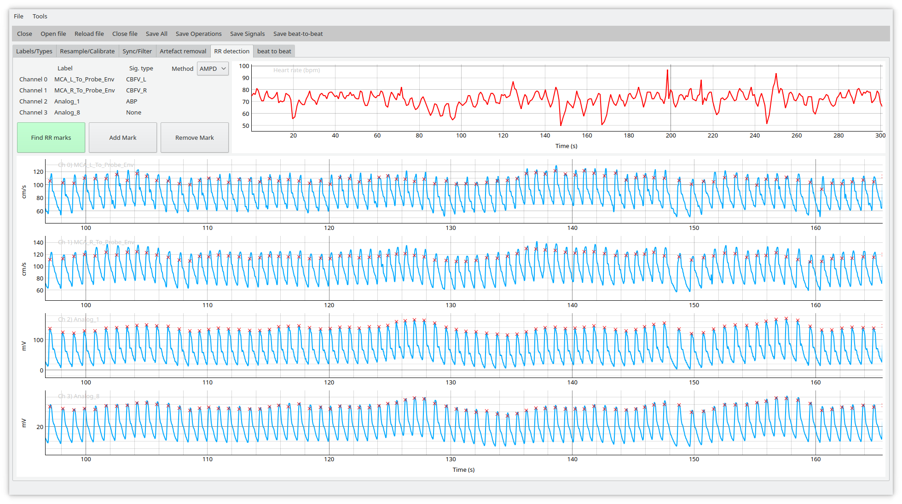
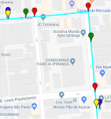

Pedro Machado Nery dos Santos
Research Scientist and Student at Federal University of ABC (SP, Brazil)
Undergraduate student at Federal University of ABC, in São Paulo, Brazil. I'm interested in Signal Processing and Machine Learning in the contex of Neuroscience and Biomedical Engineering. I am currently working on a undergraduate research project constructing a GAN (Generative Adversarial Network) applied to functional Magnetic Resonance Imaging (fMRI) data regarding mental disorders and aiming a characterization of the neurotypical brain from a conexionist perspective.
Education
| Graduation, Bachelor in Computer Science Federal University of ABC 2017- |
|
| Graduation, Medical/Biomedical Engineering Federal University of ABC 2017- |
|
| Graduation, Bachelor in Neuroscience Federal University of ABC 2017- |
|
| Graduation, Bachelor in Science and Technology Federal University of ABC 2017-2020 |
|
 |
High School Colégio Singular-Anglo Santo André 2014-2016 |
Skills
| Python | Numpy, Scipy, Matplotlib, Tensorflow, Keras |
| HTML/CSS/JS | Bootstrap, JQuery, React |
| Other Languages | Java, MATLAB, C, R, Haskell |
| Systems | Windows, Linux |
| Tools and Tech | Git, SQL, MongoDB, Ajax |
| Other | Playing with some Arduino! |
| Idioms | Portuguese, English, Spanish |
Concentration Fields
| Data Modeling and Analysis |
| (Bio)Signal Processing |
| Machine Learning |
| Neuroscience |
| Neuroimaging and Neurodevelopment |
| Highly enthusiastic about learning! |
Experience
| 2021 |
Machine Learning Applications on Hybrid Brain Computer Interfaces (hBCIs) Graduation project (Computer Science) Brain-Machine Interfaces (BMIs) are devices that allow the direct communication between neural patterns and action mechanisms, being applied for accessibility purposes for people with debilitated/lost functions, amplification of the communication with computers and for the control of external devices such as spellers and exoskeletons. Typically, these devices are based on the collection of electroencephalography (EEG) signals in real time, but recently the use of other signals such as electromyography (EMG) and electrooculography (EOG) have been integrated to these systems with the objective of making its functionality more consistent, constituting the so-called hybrid BMIs. The implementation of such systems requires, beyond from signal processing techniques, feature extraction and pattern classification processes, supported by algorithms such as the Common Spatial Pattern (CSP) and Support Vector Machines (SVMs), among other optimization and machine learning algorithms. Additionally, hybrid BMIs have the challenge to integrate the processing of different signals simultaneously or sequentially, using fusion or switching processes. The present project aims to propose a hybrid BMI implementation applied to one of the classic contexts of BMI use, through digital signal processing and machine learning techniques. |
Show details | |
| 2020 |
Generation, Discrimination and Metrification of Cerebral Functional Connectivity Patterns Undergraduate research project Several mental disorders might be contextualized as an abnormal establishment of connections in the process of atypical neurodevelopment. Characterizing such atypicality is of strong interest in the search for biomarkers and progression trackers for psychiatric conditions, aiming to outline potential risks and treatment strategies for patients. Functional Magnetic Resonance Imaging (fMRI) allows the in-vivo assessment of functional connectivity (FC) patterns in subjects. In this article, we used correlation matrices derived from a ROI (region of interest)-to-ROI analysis of fMRI time series (377 neurotypical and 126 neuroatypical participants) as features in the construction and evaluation of Generative Adversarial Networks (GANs) models. Each of the 333 ROIs belonged to a large-scale resting-state brain connectivity network. Five of these networks were selected for the construction of separate models using five intra-net sets of features. Each GAN network consists of two underlying subnetworks: a generator and a discriminator. A normative strategy was adopted, and so the models were only trained on neurotypical data. The generator subnetwork of each GAN model aims to generate patterns alike of those observed in the data for that net, capturing the natural variability of FC in neurotypicality. The discriminator subnetwork of each GAN model aims to discriminate between the learned FC neurotypical pattern and other patterns (both FC neuroatypical and unrelated to FC). The discriminator models of the different five large-scale brain connectivity networks were combined in ensembles, improving the performance for the classification of subjects’ neurotypicality. Explanations for the model’s predictions are provided using the LIME (Local Interpretable Model Agnostic) algorithm. Local hubs are discussed in light of these explanations. Reasonable and explainable prognosis prediction was observed through the proposed strategy of model selection and ensembles based on the generation of neurotypical connectivity patterns from GAN. |
Show details | |
| 2019 |
Validação de Sistema de Avaliação de Hemodinâmica Encefálica em sujeitos controle Undergraduate research project O projeto propõe a validação de uma plataforma voltada para a avaliação da hemodinâmica encefálica, mais especificamente no fenômeno de autorregulação cerebral. Este mecanismo é responsável por manter a velocidade de fluxo sanguíneo cerebral (vFSC) constante apesar de variações de pressão arterial (PA). É sabido que a autorregulação é prejudicada numa série de doenças neurológicas de maneira que é importante estabelecer métodos de avaliar a hemodinâmica encefálica para prover tratamento adequado, minimizando possíveis danos cerebrais secundários. A plataforma abrange três métodos principais: Análise da Função de Transferência (TFA), Índice de Autorregulação (ARI) e ARI-ARMA (Auto Regressive Moving Average), além de ferramentas de visualização e remoção de artefato, calibração, detrending, detecção de picos, filtragem, janelamento, interpolação, entre outros. Os métodos e o software desenvolvido serão validados em sujeitos controle e disponibilizados na forma de código aberto para o uso de clínicos, podendo ser também utilizados para comparações entre métodos distintos, estudos com sinais gerados, estabelecimento de padrões-ouro, estudos de variação de parâmetros e a inclusão de novos métodos. O estudo desenvolvido se insere no contexto de um projeto maior multidisciplinar, de caráter colaborativo entre centros. |
Show details | |
| 2018 |
Sistema de Avaliação em Circulação Encefálica Undergraduate research project O principal objetivo do projeto foi desenvolver uma plataforma para avaliar a hemodinâmica encefálica, mais especificamente no mecanismo da autorregulação cerebral, implementando métodos como a Análise de Função de Transferência (TFA) e Índice de Autorregulação (ARI). Os métodos serão validados em sujeitos saudáveis e pacientes que sofreram acidente vascular cerebral (AVC). |
Show details | |
| 2017 |
Predicition of São Paulo’s Buses’ Travel Time Undergraduate research project In the context of Smart Cities, we used SPTrans data to model the travel times of 20 São Paulo bus lines as probability distributions, analyzing their variability. The distribution which best fitted the travel times in most cases was the lognormal, showing that there is a portion of buses travels taking much longer than the mean to be completed. We also analyzed how each constituent factor (line length, number of stops, mean travel time, mean velocity) related to each other and affected service quality. |
Show details |
Publications
|  |
Salinet, J., de Moura, F. S., Romanelli, R.,dos Santos, P. M. N., Zamai, M., Panerai, R. B., ... & Salinet, A. S. M. (2021). CAAos platform: an integrated platform for analysis of cerebral hemodynamics data . Physiological Measurement.
[Show Abstract] [IOP Science Article] [Proposed Platform]
Abstract: Objective: The purpose of this article is to introduce the readers to the concept and structure of CAAos (Cerebral Autoregulation Assessment Open Source) platform, and provide evidence of its functionality. Approach: CAAos platform is a new open-source software research tool, developed in Python 3 language, that combines existing and novel methods for interactive visual inspection, batch processing and analysis of multichannel records. The platform is scalable, allowing for customization and inclusion of new tools. Main results: Currently CAAos platform is composed of two main modules, preprocessing (containing artefact removal, filtering and signal beat to beat extraction tools) and cerebral autoregulation (CA) analysis modules. Two methods for assessing CA have been implemented into CAAos platform: transfer function analysis (TFA) and autoregulation index (ARI). In order to provide validation of TFA and ARI estimates derived from CAAos platform, the results were compared with those derived from two other algorithms. Validation was performed using data from twenty-eight participants, corresponding to 13 acute ischemic stroke patients and 13 age- and sex-matched control subjects. Agreement between estimates was assessed by intraclass correlation coefficient and Bland-Altman analysis. No significant statistical difference between algorithms was found. Moreover, there was an excellent correspondence between the curves of all parameters analysed, with intraclass correlation coefficient ranging from 0.98 (95%CI 0.976-0.999) to 1.00 (95%CI 1 -1). The mean differences revealed a very small magnitude bias indicating an excellent agreement between the estimates. Significance: As open-source software, the source code for the software is freely available for non-commercial use, reducing barriers to performing CA analysis, allowing inspection of the inner-workings of the algorithms, and facilitating networked activities with common standards. CAAos platform is a tailored software solution for the scientific community in the cerebral hemodynamic field and contributes to increasing use and reproducibility of CA assessment. |
|  |
SANTOS, P. M. N.; SALINET, J. L. ; MOURA, F. S. ; SALINET, A. S. M. . Sistema de Avaliação em Circulação Encefálica. In: Anais da XXVII Jornadas de Jovens Pesquisadores da Associação de Universidades Grupo Montevideo (AUGM), 2020, São Carlos. XXVII Jornadas de Jovens Pesquisadores - A ciência e a tecnologia na produção de inovação e transformação social, 2019.
[Show Abstract] [PDF] [Proposed Platform]
Abstract: O mecanismo de autorregulação cerebral (AC) tem papel crucial na homeostase encefálica, sendo responsável por manter a velocidade de fluxo sanguíneo encefálico (vFSE) constante apesar de variações de pressão arterial (PA). Uma perfusão encefálica própria é essencial dada à dependência crítica do cérebro humano por energia. Este estudo visa validar o método da análise de função de transferência (TFA) em sujeitos saudáveis para inserção na plataforma clínica open source em desenvolvimento para o cálculo da autorregulação cerebral. Sinais de PA e vFSE de 5 minutos obtidos de 12 sujeitos saudáveis foram utilizados para as análises em off-line. O cálculo da autorregulação cerebral consiste na análise batimento-a-batimento (sincronização dos sinais, detecção do onset da PA e vFSE por ciclo cardíaco, cálculo de valores médios de PA e vFSE por ciclo cardíaco e upsampling do sinal resultante com spline cúbico), seguido pela Análise de Função de Transferência (análise espectral via método Welch, cálculo do auto espectro e espectro cruzado, cálculo do sinal da função de transferência e seus valores de ganho, fase e coerência). Os resultados obtidos são comparados pelo algoritmo da TFA desenvolvido pela rede de pesquisa em AC (CARNet). Os resultados indicam que não houve diferença estatística o algoritmo proposto e do CARNet. A análise de reprodutibilidade apresenta excelente correspondência entre as curvas de todos os parâmetros analisados variando de 0.98 (IC 95% 0.976-0.999) a 1,00 (IC 95% 1 -1). Após a validação, o algoritmo TFA proposto em conjunto com técnicas de pré-processamento e ferramentas úteis para a análise são incluídas na plataforma clínica open source em desenvolvimento para o cálculo da autorregulação cerebral. |
|  | SALINET, J. L. ; MOURA, F. S. ; SANTOS, P. M. N. ; BOR-SENG-SHU, E. ; SALINET, A. S. M. .
Plataforma de Avaliação de Autorregulação Cerebral. In: XII SIMPÓSIO DE ENGENHARIA BIOMÉDICA - IX SIMPÓSIO DE INSTRUMENTAÇÃO E IMAGENS MÉDICAS, 2019, Uberlândia, MG, Brasil.
ANAIS DO XII SIMPÓSIO DE ENGENHARIA BIOMÉDICA - IX SIMPÓSIO DE INSTRUMENTAÇÃO E IMAGENS MÉDICAS, 2019.
[Show Abstract] [PDF] [Proposed Platform] Abstract: Neste estudo foi realizada a validação preliminar, em sujeitos controle, de uma multiplataforma de avaliação de autorregulação cerebral (AC). Este mecanismo é essencial na manutenção do fluxo sanguíneo cerebral (FSC) adequado, do qual o cérebro é criticamente dependente devido a sua alta demanda energética. O mecanismo de AC permite manter o FSC constante mesmo sobre variações de pressão arterial sistêmica, sendo afetada em diversos quadros neurológicos que necessitam de avaliação. Métodos não invasivos como a Análise de Função de Transferência (AFT) e o Índice de Autorregulação (IAR) foram implementados numa nova plataforma open source voltada para a avaliação de AC. A plataforma representa uma inovação sobre versões anteriores de softwares com este propósito e tem sua funcionalidade demonstrada pelo estabelecimento de valores de média e variabilidade característicos dos parâmetros para sujeitos saudáveis nos índices do método AFT. Keywords: fluxo sanguíneo cerebral, pressão arterial, processamento de sinais fisiológicos, modelamento, autorregulação cerebral. |
|  |
SANTOS, P. M. N.; CAMARGO, R. Y. . Predição do tempo de deslocamento dos ônibus em São Paulo. REVISTA BRASILEIRA DE INICIAÇÃO CIENTÍFICA, v. 6, p. 159, 2019.
[Show Abstract] [PDF]
Abstract: In the context of Smart Cities, we used SPTrans data to model the travel times of 20 São Paulo bus lines as probability distributions, analyzing their variability. The distribution which best fitted the travel times in most cases was the lognormal, showing that there is a portion of buses travels taking much longer than the mean to be completed. We also analyzed how each constituent factor (line length, number of stops, mean travel time, mean velocity) related to each other and affected service quality. |
Awards and prizes
| 2018 | Honorable Mention - VIII UFABC's Scientific Initiation Symposium, Federal University of ABC. |
| 2016 | Medal in the Brazilian Physics Olympiad - Brazilian Physics Society (SBF) |
Interests
Signal Processing
This website is still in construction. Please stay tuned for upcoming details.
Machine Learning
This website is still in construction. Please stay tuned for upcoming details.
Neuro(imaging/development)
This website is still in construction. Please stay tuned for upcoming details.
Personal Projects
Tutorials
Basic tutorials for beginners in programming and data analysis.
Apps & Utilities
This website is still in construction. Please stay tuned for upcoming details.
Study notes
This website is still in construction. Please stay tuned for upcoming details.